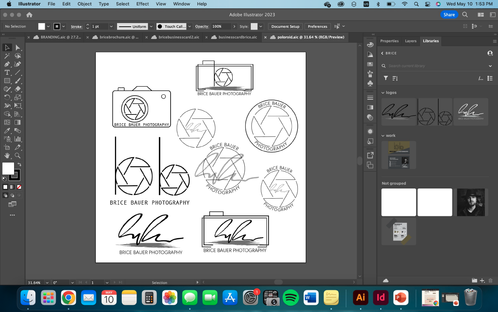
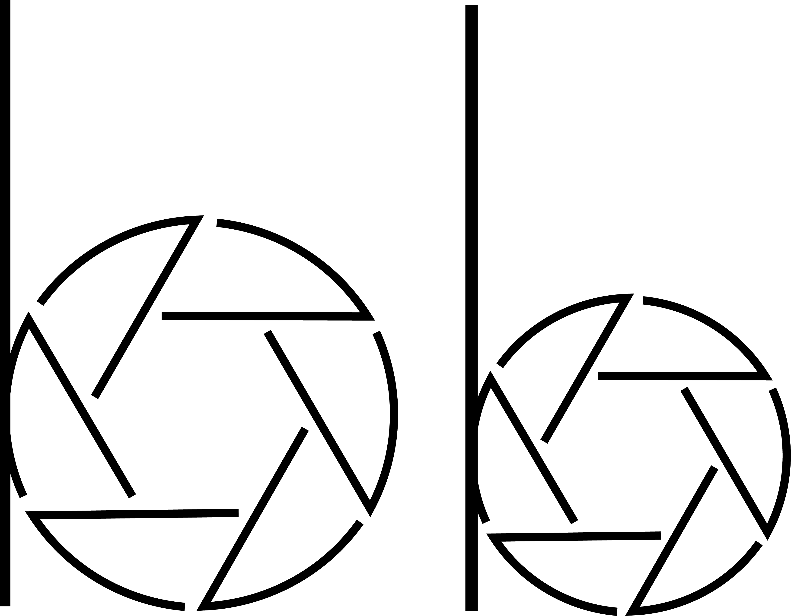
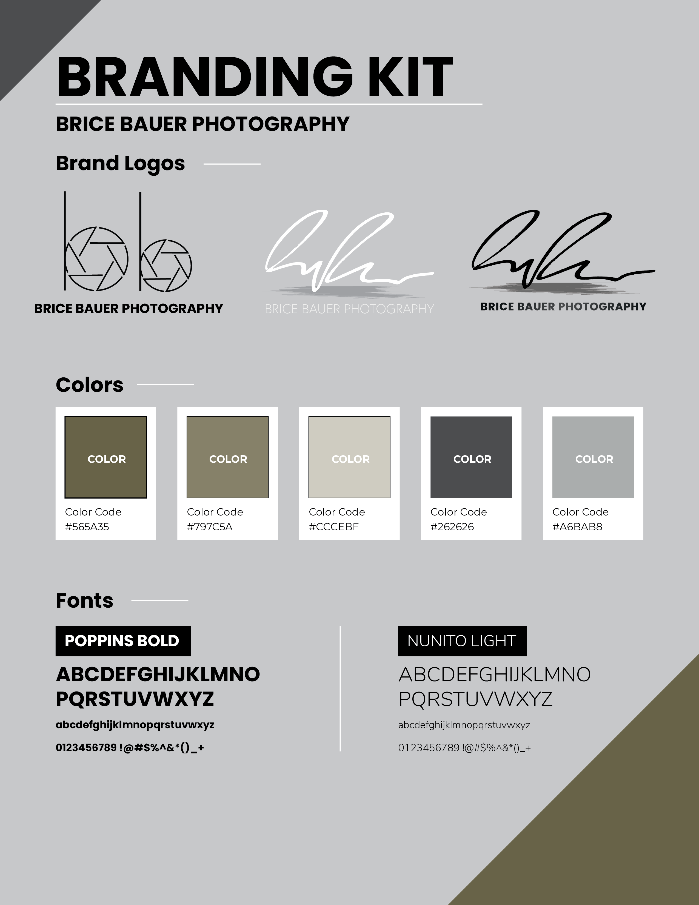
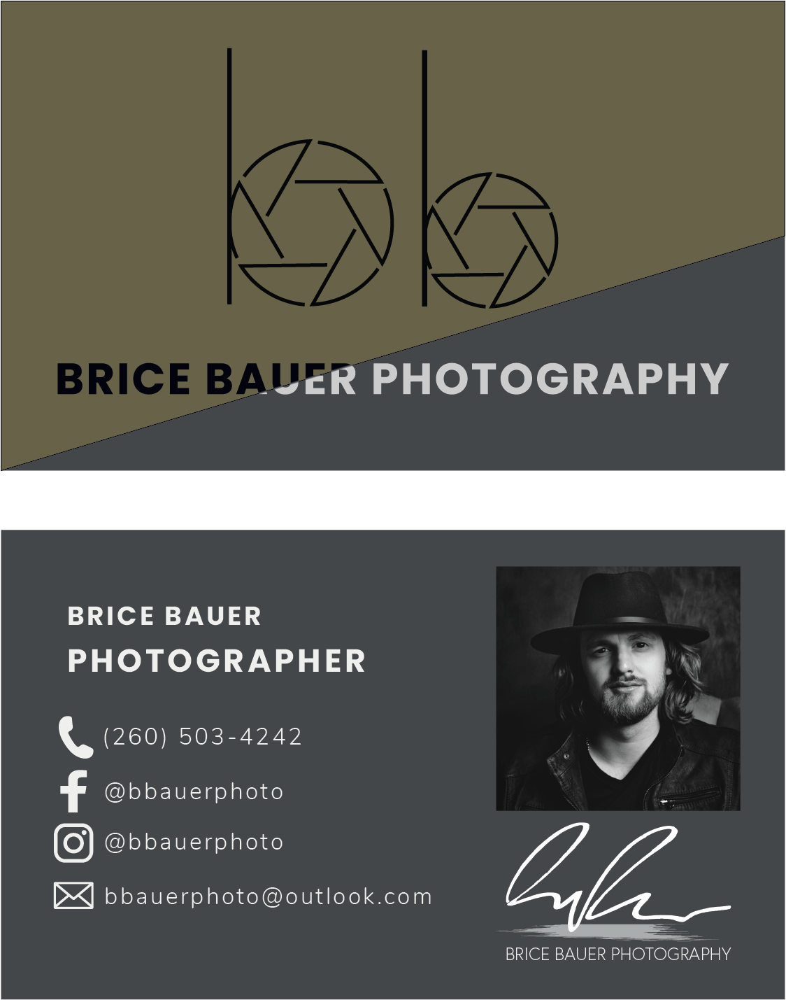

Brice Bauer Photography

Overview
Brice Bauer Photography is a small photography business specializing in capturing meaningful moments through a clean and professional visual style. As part of a freelance and capstone project, I developed a complete brand identity system to establish a cohesive and recognizable presence across both print and digital platforms.
The project included logo development, brand guidelines, business stationary, marketing collateral, and social media assets, all designed around the client's request for a modern and minimalistic visual identity.
Role
I was responsible for the complete creative development of the brand identity and supporting marketing materials. The specific roles included:
The Challenge
The client wanted a visual identity that reflected the professionalism and creativity of their photography business while maintaining a clean and modern aesthetic. The challenge was to create a flexible branding system that could be applied consistently across print materials, digital platforms, and future marketing efforts while remaining visually timeless.
The Process and Tools
Logo Development
The project began with the exploration of several logo concepts designed around simplicity, versatility, and strong brand recognition.
Multiple concepts were developed and refined to explore different approaches to typography, iconography, and overall brand personality. Through an iterative process, the final direction was selected and refined into a cohesive identity that aligned with the client's vision.

Final Logo
The selected logo was designed to function effectively across a variety of applications, from printed marketing materials to digital platforms and social media.

Main logo design.
Alternate logo design.
Branding Kit
To ensure consistency across all customer touchpoints, I developed a complete branding kit outlining the core visual elements of the brand, including logo, typography, and color palette.
The branding kit provided a foundation for future marketing materials and established clear, easy to read guidelines for maintaining a cohesive visual identity.

Marketing Materials
Business Card
A professionally designed business card was created to provide a clean and memorable representation of the brand while maintaining consistency with the overall identity system.

Brochure
The brochure was designed to showcase photography services offered and communicate key information in a visually engaging format. The layout emphasized strong imagery, clean typography, and a clear content hierarchy.
Can't see the document preview? Click here to download the PDF directly.
Social Media Assets
To demonstrate how the brand could be applied across digital platforms, I created sample social media graphics that extended the visual identity into online marketing channels.
The designs maintained consistency with the established branding system while adapting the visual language for social media audiences.
The Final Outcome
The completed project delivered a cohesive visual identity system that established a professional and recognizable brand presence for Brice Baeuer Photography. Through logo development, brand guidelines, print collateral, and digital marketing assets, the project demonstrated how a consistent branding system can create a unified experience across multiple customer touchpoints while supporting future business growth.